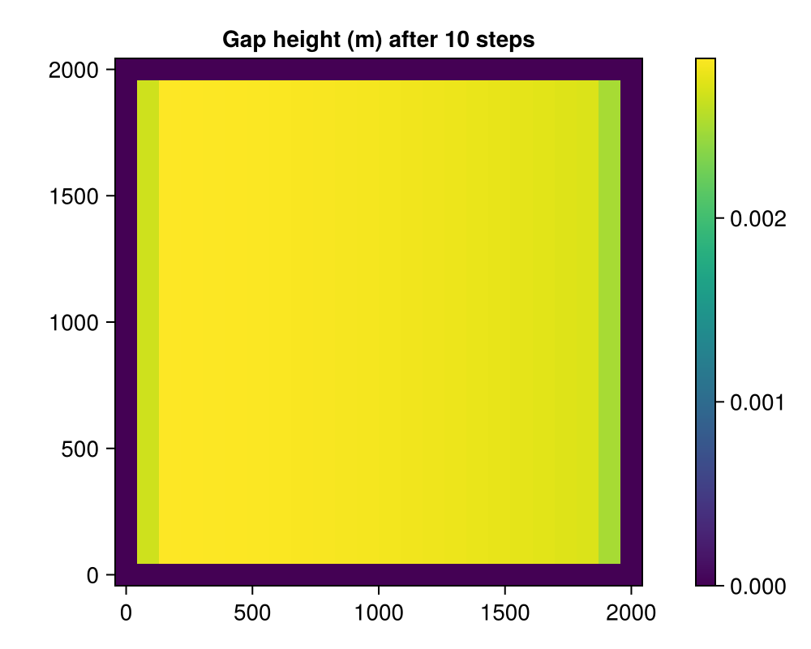

All options
A reference listing of every user-facing choice in Shakti, gathered in one place and grouped by the source file that defines it – for "what are ALL the choices for X", skim the section headed with X's source file. Unlike the other examples, this one isn't chasing a particular physical result: it builds one small, fast-running simulation, but comments every alternative not taken right where the choice is made.
using Shakti
using CairoMakie1. Backend / float type (src/Shakti.jl)
These are Julia preferences, baked into Shakti at using Shakti time via LocalPreferences.toml – not a runtime argument, so they can't be switched inside a running session (this page's using Shakti already fixed them for everything below). Set them before using Shakti, e.g.:
using Preferences
set_preferences!("Shakti", "backend" => "CUDA", "floattype" => "Float32"; force = true)
using Shaktibackend: "Threads" (CPU, multithreaded – start Julia with -t N) | "Metal" (Apple GPU) | "CUDA" (NVIDIA GPU) floattype: Float64 | Float32 (GPU backends commonly use Float32 for throughput; CholeskyDirectSolver/ CGIterativeSolver(..., SparseAssembledLinearSystem) are CPU-only and need Float64)
println("This page was built with backend = \"$(Shakti.backend)\", floattype = $(Shakti.floattype)")This page was built with backend = "Threads", floattype = Float642. Grid (src/grid.jl)
Grid(nx, ny, lx, ly): nx*ny cells over a domain of size lx*ly (meters); dx/dy and the cell-center coordinate vectors x/y are derived from these four numbers.
const NX, NY = 24, 24
const LX, LY = 2000.0, 2000.0
grid = Grid(NX, NY, LX, LY)Grid{Float64, Vector{Float64}}(24, 24, 2000.0, 2000.0, 86.95652173913044, 86.95652173913044, [0.0, 86.95652173913044, 173.91304347826087, 260.8695652173913, 347.82608695652175, 434.7826086956522, 521.7391304347826, 608.695652173913, 695.6521739130435, 782.6086956521739 … 1217.391304347826, 1304.3478260869565, 1391.304347826087, 1478.2608695652175, 1565.2173913043478, 1652.1739130434783, 1739.1304347826087, 1826.0869565217392, 1913.0434782608695, 2000.0], [0.0, 86.95652173913044, 173.91304347826087, 260.8695652173913, 347.82608695652175, 434.7826086956522, 521.7391304347826, 608.695652173913, 695.6521739130435, 782.6086956521739 … 1217.391304347826, 1304.3478260869565, 1391.304347826087, 1478.2608695652175, 1565.2173913043478, 1652.1739130434783, 1739.1304347826087, 1826.0869565217392, 1913.0434782608695, 2000.0], 7561.436672967864, 7561.436672967864)3. Model parameters (src/model_parameters.jl)
Every ModelParameters keyword, with its default. e_v == 0.0 selects EllipticHeadScheme (Picard iteration, used below); e_v != 0.0 selects ParabolicHeadScheme instead (single backward-Euler solve per step – see the Parabolic head scheme example). ct == 0.0 or cw == 0.0 disables the sensible-heat term (NoSensibleHeat instead of WithSensibleHeat, decided once in Simulation's constructor). br == 0.0 disables the opening-by-sliding term (NoOpenBySliding instead of WithOpenBySliding, same "decided once" idiom).
p = ModelParameters(
rho_w = 1000.0, # density of subglacial/fresh water
rho_sw = 1027.0, # density of ocean (sea) water -- only used for the OCEAN Dirichlet BC's hydrostatic pressure
rho_i = 910.0, # density of ice
g = 9.81, # gravitational acceleration
nu = 1.787e-6, # kinematic viscosity of water
n = 3.0, # Glen's flow law exponent
omega = 1e-4, # laminar/turbulent transition parameter (Table 2, Sommers et al. 2018, gives 1e-3; see ModelParameters' own docstring for why 1e-4 is the default here instead)
L = 334e3, # latent heat of fusion
br = 0.05, # bedrock bump height (0.0 -> NoOpenBySliding)
lr = 2.0, # bedrock bump spacing
ct = 7.5e-8, # change of pressure-melting-point with temperature (0.0 -> NoSensibleHeat)
cw = 4.22e3, # heat capacity of water (0.0 -> NoSensibleHeat)
p_atm = 0.0, # atmospheric pressure, the Dirichlet reference for LAND/OCEAN boundary conditions
b_min = 1e-3, # minimum water thickness (numerical floor)
e_v = 0.0, # englacial storage void ratio (0.0 -> EllipticHeadScheme; nonzero -> ParabolicHeadScheme)
)ModelParameters{Float64, Int64, Int64, Float64}(1000.0, 1027.0, 910.0, 9.81, 1.787e-6, 3.0, 0.0001, 334000.0, 0.05, 2.0, 7.5e-8, 4220.0, 0.0, 0.001, 0.0, 3, 2, 0.3333333333333333)4. Mask (src/mask.jl)
Every cell is one of four State.mask values – GROUNDED (dynamic hydrology solved here), OCEAN/LAND (Dirichlet head boundaries, differing only in which density sets the prescribed pressure), or OTHER_BASIN (frozen; any face touching it is zeroed in every gradient/flux). See the Mask variants example for full geometries built from these four values.
mask = fill(GROUNDED, NX, NY)
mask[end, :] .= OCEAN # Dirichlet, pw = p_atm - rho_sw*g*min(zb, 0)
mask[1, :] .= OTHER_BASIN # frozen
mask[:, 1] .= OTHER_BASIN
mask[:, end] .= OTHER_BASIN24-element view(::Matrix{Float64}, :, 24) with eltype Float64:
3.0
3.0
3.0
3.0
3.0
3.0
3.0
3.0
3.0
3.0
⋮
3.0
3.0
3.0
3.0
3.0
3.0
3.0
3.0
3.05. Melt input (src/melt_input.jl)
Multiple dispatch on the AbstractMeltInput subtype passed to Simulation/step!:
ConstantMeltInput()–state.iebfixed at whateverset_initial_conditions!seeded, for the whole runSeasonalMeltInput(; t_start, t_end, amplitude, offset, i_min, seconds_per_year)– cosine-shaped melt season, see the Seasonal melt input example
mi = ConstantMeltInput()ConstantMeltInput()6. Sliding law (src/sliding_law.jl)
Multiple dispatch on the AbstractSlidingLaw subtype, decided once per Simulation:
RegularizedCoulombSlidingLaw(C)– taub -> CN as ub/N^nlambda -> infinity, recomputed from N/ub every Picard iterationLinearSlidingLaw(grid, C)– taub = C^2Nu_b exactly;Ccan be a scalar or an(nx,ny)field (e.g. an inverted per-cell drag coefficient, see the Helheim Glacier example)PrescribedSlidingLaw()– taubx/tauby fixed once (viaset_initial_conditions!'s owntaub_x/taub_yarguments) and never recomputed
sl = RegularizedCoulombSlidingLaw(0.25)RegularizedCoulombSlidingLaw{Float64}(0.25)7. K-face scheme (src/k_face_scheme.jl)
How transmissivity K is averaged onto a cell face from its two neighbouring cell centers, passed as k_face_choice to Simulation:
"arithmetic"->Arithmetic:(K1 + K2) / 2"harmonic"->Harmonic:2*K1*K2 / (K1 + K2 + eps)(weights the lower-K side more heavily)
k_face_choice = "arithmetic""arithmetic"8. Gap scheme (src/simulation.jl / src/gap_height.jl)
How gap height b is time-integrated, passed as gap_scheme_choice to Simulation:
"implicit"->ImplicitGapScheme: backward-Euler on the creep-closure term, unconditionally stable, the usual choice"explicit"->ExplicitGapScheme: forward-Euler, cheaper per step but only stable for small enoughdt
gap_scheme_choice = "implicit""implicit"9. Linear solver (src/linear_solver.jl, src/preconditioner.jl)
Passed as ps/ls to Simulation depending on p.e_v (see section 3 above):
CholeskyDirectSolver(grid)– CPU-only ("Threads" backend only), direct factorizationCGIterativeSolver(grid, SparseAssembledLinearSystem; chebyshev_degree, chebyshev_nsteps_estimate, amg)– CPU-onlyCGIterativeSolver(grid, MatrixFreeLinearSystem; chebyshev_degree, chebyshev_nsteps_estimate)– works on every backend, the only choice compatible with Metal/CUDA
chebyshev_degree: nothing -> plain Jacobi preconditioning; Int >= 1 -> ChebyshevPreconditioner of that degree. amg (SparseAssembledLinearSystem only): true -> AMGPreconditioner (CPU/SparseMatrixCSC-only, the default there, and the fastest choice measured across every grid size tested); false -> plain Jacobi.
ls = CholeskyDirectSolver(grid)CholeskyDirectSolver{SparseArrays.CHOLMOD.Factor{Float64, Int64}, SparseAssembledLinearSystem{Float64}, Vector{Float64}}(SparseAssembledLinearSystem{Float64}(sparse([1, 2, 25, 1, 2, 3, 26, 2, 3, 4 … 573, 574, 575, 551, 574, 575, 576, 552, 575, 576], [1, 1, 1, 2, 2, 2, 2, 3, 3, 3 … 574, 574, 574, 575, 575, 575, 575, 576, 576, 576], [1.0, 0.0, 0.0, 0.0, 1.0, 0.0, 0.0, 0.0, 1.0, 0.0 … 0.0, 1.0, 0.0, 0.0, 0.0, 1.0, 0.0, 0.0, 0.0, 1.0], 576, 576), [0.0, 0.0, 0.0, 0.0, 0.0, 0.0, 0.0, 0.0, 0.0, 0.0 … 0.0, 0.0, 0.0, 0.0, 0.0, 0.0, 0.0, 0.0, 0.0, 0.0], [1 96 … 2574 2692; 5 101 … 2579 2696; … ; 89 206 … 2684 2780; 93 211 … 2689 2784], [4 100 … 2578 2695; 8 105 … 2583 2699; … ; 92 210 … 2688 2783; 0 0 … 0 0], [0 0 … 0 0; 2 97 … 2575 2693; … ; 86 202 … 2680 2777; 90 207 … 2685 2781], [95 213 … 2691 0; 99 217 … 2694 0; … ; 204 322 … 2778 0; 209 327 … 2782 0], [0 3 … 2458 2576; 0 7 … 2463 2581; … ; 0 91 … 2568 2686; 0 94 … 2572 2690]), SparseArrays.CHOLMOD.Factor{Float64, Int64}
type: LLt
method: simplicial
maxnnz: 5787
nnz: 5787
success: true
, [0.0, 0.0, 0.0, 0.0, 0.0, 0.0, 0.0, 0.0, 0.0, 0.0 … 0.0, 0.0, 0.0, 0.0, 0.0, 0.0, 0.0, 0.0, 0.0, 0.0])10. Picard solver (src/elliptic_solver.jl)
Only used under EllipticHeadScheme (p.e_v == 0). PicardSolver(iters, tol, ls, grid; alpha, check_every):
iters/tol– maximum iterations and relative convergence tolerancealpha:nothing->NoHeadRelaxation;Float64in(0, 1]->UnderHeadRelaxation(alpha), damping oscillations on stiff problems at the cost of slower convergencecheck_every: how many Picard iterations between convergence checks (each check forces a GPU->CPU sync on GPU backends;1was fastest at every grid size measured so far)
ps = PicardSolver(500, 1e-6, ls, grid; alpha = nothing, check_every = 1)PicardSolver{Float64, CholeskyDirectSolver{SparseArrays.CHOLMOD.Factor{Float64, Int64}, SparseAssembledLinearSystem{Float64}, Vector{Float64}}, NoHeadRelaxation, Matrix{Float64}}(500, 1.0e-6, CholeskyDirectSolver{SparseArrays.CHOLMOD.Factor{Float64, Int64}, SparseAssembledLinearSystem{Float64}, Vector{Float64}}(SparseAssembledLinearSystem{Float64}(sparse([1, 2, 25, 1, 2, 3, 26, 2, 3, 4 … 573, 574, 575, 551, 574, 575, 576, 552, 575, 576], [1, 1, 1, 2, 2, 2, 2, 3, 3, 3 … 574, 574, 574, 575, 575, 575, 575, 576, 576, 576], [1.0, 0.0, 0.0, 0.0, 1.0, 0.0, 0.0, 0.0, 1.0, 0.0 … 0.0, 1.0, 0.0, 0.0, 0.0, 1.0, 0.0, 0.0, 0.0, 1.0], 576, 576), [0.0, 0.0, 0.0, 0.0, 0.0, 0.0, 0.0, 0.0, 0.0, 0.0 … 0.0, 0.0, 0.0, 0.0, 0.0, 0.0, 0.0, 0.0, 0.0, 0.0], [1 96 … 2574 2692; 5 101 … 2579 2696; … ; 89 206 … 2684 2780; 93 211 … 2689 2784], [4 100 … 2578 2695; 8 105 … 2583 2699; … ; 92 210 … 2688 2783; 0 0 … 0 0], [0 0 … 0 0; 2 97 … 2575 2693; … ; 86 202 … 2680 2777; 90 207 … 2685 2781], [95 213 … 2691 0; 99 217 … 2694 0; … ; 204 322 … 2778 0; 209 327 … 2782 0], [0 3 … 2458 2576; 0 7 … 2463 2581; … ; 0 91 … 2568 2686; 0 94 … 2572 2690]), SparseArrays.CHOLMOD.Factor{Float64, Int64}
type: LLt
method: simplicial
maxnnz: 5787
nnz: 5787
success: true
, [0.0, 0.0, 0.0, 0.0, 0.0, 0.0, 0.0, 0.0, 0.0, 0.0 … 0.0, 0.0, 0.0, 0.0, 0.0, 0.0, 0.0, 0.0, 0.0, 0.0]), false, 0, NoHeadRelaxation(), [0.0 0.0 … 0.0 0.0; 0.0 0.0 … 0.0 0.0; … ; 0.0 0.0 … 0.0 0.0; 0.0 0.0 … 0.0 0.0], [0.0 0.0 … 0.0 0.0; 0.0 0.0 … 0.0 0.0; … ; 0.0 0.0 … 0.0 0.0; 0.0 0.0 … 0.0 0.0], 1)11. Observer (src/observer.jl)
Passed as which_observer/which_file_writer to Simulation:
"Live"->LiveObserver: history kept in RAM (needed formake_mp4_2d/make_mp4_mid)"IO"->IOObserver: streamed to disk viawhich_file_writer, one of"NetCDF"/"HDF5"/"JLD2"(full tracked-field grids per tracked time) or"CSV"(one row per tracked time, min/max/mean per field)tracked_obs = String[](empty) ->NoObserver, regardless ofwhich_observer
which_observer = "Live"
tracked_obs = ["h", "b", "N", "Re", "mdot"] # any State field name (src/state.jl)
tracked_times = 0:100:1012. Building and running the Simulation (src/simulation.jl, src/run.jl)
Every choice above comes together here. run! also accepts checkpoint_every/checkpoint_path (periodic save_checkpoint) and restart_path (resume via load_checkpoint!) – see src/checkpoint.jl.
A_visc = fill(5e-25, NX, NY)
zb = zeros(NX, NY)
zs = zb .+ 500.0
b0 = fill(0.01, NX, NY)
G = fill(0.06, NX, NY)
ub_x = fill(1e-6, NX + 1, NY)
ub_y = zeros(NX, NY + 1)
ieb = fill(1.0 / (365 * 86400.0), NX, NY) # 1 m/yr distributed input -> m/s
taub_x = zeros(NX + 1, NY) # unused: RegularizedCoulombSlidingLaw recomputes taub from N/ub every Picard iteration
taub_y = zeros(NX, NY + 1)
state = State(grid)
set_initial_conditions!(state, grid, p, sl, mask, A_visc, zb, zs, b0, G, ub_x, ub_y, ieb, taub_x, taub_y)
sim = Simulation(grid, state, 10, floattype(3600.0), p, gap_scheme_choice, tracked_obs, mi, sl;
ps = ps, which_observer = which_observer, tracked_times = tracked_times,
k_face_choice = k_face_choice, verbose = false)
run!(sim)
fig = Figure(size = (500, 400))
ax = Axis(fig[1, 1], title = "Gap height (m) after 10 steps", aspect = DataAspect())
hm = heatmap!(ax, grid.x, grid.y, Array(sim.state.b))
Colorbar(fig[1, 2], hm)
fig